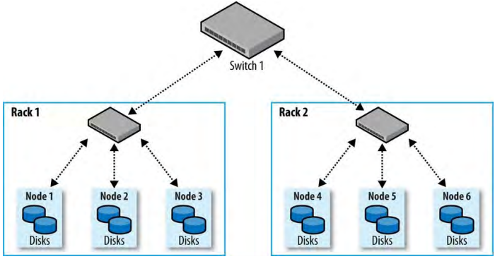

1、集群规范（Cluster Specification）
Hadoop被设计为运行在商用硬件（commodity hardware）上。意味着，不依赖与某个供应商的昂贵硬件，而可以使用来自许多供应商的标准、通用硬件。
商用并不意味着“低端”。另外，也不推荐使用大型的数据库级别（database-class machines）的机器，因为性价比不高；并且，使用它们建造一个与较多中级商用硬件（mid-range commodity hardware）性能相当于集群相比，使用的机器数量较少，当一个机器故障，对集群的影响相对也会比较大。
尽管集群硬件规范没有硬性的要求，Hadoop是为多核心多硬盘硬件而设计的；当然，越强大的硬件越好。
HDFS并不受益于datanode存储的RAID（redundant array of independent disks，独立磁盘的冗余阵列），但是，为了防止元数据的损坏namenode的硬盘推荐使用RAID。RAID提供的冗余是没必要的，因为HDFS通过节点键的复本处理了数据冗余。
另外，RAID用来提升性能的RAID striping（RAID 0）比HDFS使用的JBOD（just a bunch of disks）配置要慢，JBOD在所有磁盘的HDFS blocks之间进行轮询。因为，RAID 0的读写操作受RAID阵列中响应最慢的磁盘的速度限制。在JBOD中，磁盘操作是独立的，所有平均操作速度要比速度最慢的磁盘快很多。实际上，即使是相同模式的磁盘，磁盘性能差异也相当的大。
最后，在JBOD配置中，如果一个磁盘故障，HDFS不使用坏掉的磁盘也能继续进行操作，而RAID中一个磁盘故障会导致整个阵列（由此整个节点）变得不能使用。
1.1、集群大小（Cluster Sizing）
Hadoop的好处是，可以以小的集群（比如，10个节点）开始，并随着存储和运算需求的增长而扩展。可以根据存储能力（storage capacity）进行集群的扩展。
1.1.1、主节点方案（Master node scenarios）
根据集群的大小，运行主守护线程（master daemons：namenode、secondary namenode、资源管理器、history server）的配置有很多种。对于小集群（大约10个节点），通常在一台主机（master machine）上运行namenode和资源管理器就可以（只要namenode的元数据的至少一个备份保存在远程文件系统中）。但是，随着集群变大，就很有必要将它们分离。
namenode有很高的内存需要，因为它把整个命名空间的文件和block的元数据保存在内存中。次要namenode尽管大多数时间是空闲的，但当它创建一个检查点（checkpoint）时，它有与主namenode有相当的内存占用量。对于拥有大量文件的文件系统，在一台机器上可能没有足够的物理内存来运行主namenode和次要namenode。
除了简单的资源需求，在不同机器上运行masters的主要原因是为了高可用。HDFS和YARN都支持以acitve-standby pairs的形式运行masters的配置。如果活跃master故障，运行在另外硬件上的备用master在很少或者没有中断的情况下就能接管服务。对于HDFS，（如果不需要运行备用和次要的namenode）备用master执行次要namenode的检测点功能（checkpointing function）。
1.2、网络拓扑（Network Topology）
一般Hadoop集群架构由两层网络拓扑组成，如图10-1。一般，每个机架30到40个服务器（图中只展示3个）并且使用10Gb的交换机，并且上行（uplink）到一个（至少10Gb或更好的）核心交换机或路由器。首要观点是，聚合同机架节点间的带宽比聚合不同机架节点间的带宽好得多。
图 10-1.Typical two-level network architecture for a Hadoop cluster

1.2.1、机架意识（Rack awareness）
要获得Hadoop最佳性能，配置Hadoop使Hadoop知道网络的拓扑很重要。如果集群运行在仅仅一个机架上，那么不需要任何操作，因为这是默认的配置。但是，对于多机架集群，需要映射节点到机架（map nodes to racks）。这能够让Hadoop在节点上放置MapReduce tasks时，首先考虑机架内部（within-rack）传输（有更多的可用带宽）而不是跨机架（off-rack）传输。HDFS也能更加智能地通过权衡性能和弹性（resilience）来放置复本。
网络位置（比如节点和机架）以树表示，它反映出位置间的网络距离。namenode使用网络位置决定在哪里放置block复本；MapReduce调度器使用网络位置决定哪里的最近复本作为map task的输入。
对于图10-1中的网络，机架拓扑由两个网络位置描述——即，/switch1/rack1和/switch1/rack2。因为在这个集群中，只有一个顶层交换机，网络位置可以简化为/rack1和/rack2。
Hadoop配置必须指定节点地址和网络位置之间的映射。这个映射由Java接口，DNSToSwitchMapping描述，它的签名为：
public interface DNSToSwitchMapping {
public List<String> resolve(List<String> names);
}
参数names是一个IP地址集合，返回值是对应网络位置字符串集合。属性net.topology.node.switch.mapping.impl指定一个DNSToSwithcMapping接口的实现，namenode和资源管理器使用它来解析工作者节点网络位置。
对于图10-1的例子，将会映射node1，node2，node3到/rack1，映射node4，node5，node6到/rack2。
对于大多数的安装包都不需要自己实现这个接口，但是，默认的实现是ScriptBasedMapping，它通过用户定义的脚本来确定映射。脚本的位置由属性net.topology.script.file.name控制。这个脚本必须能接收可变数量参数（要映射的主机名或者IP地址），并且输出对应的网络位置（以空格分隔）到标准输出。
如果没有指定脚本，默认行为是将所有的节点映射到一个网络位置/default-rack。
2、集群设置和安装（Cluster Setup and Installation）
2.1、安装Java（Installing Java）
Hadoop可以在Unix和Windows操作系统上运行，都需要安装Java。对于生产环境安装，应该选择一个所使用的Hadoop发行版本认证的操作系统、Java和Hadoop的组合。Hadoop wiki列出了社区成员成功实验过的组合。
2.2、创建Unix用户帐户（Creating Unix User Accounts）
为同一台机器上运行的不同的Hadoop进程和其它服务创建专用的Unix用户账户是一个好的实践。HDFS，MapReduce，YARN服务通常以不同的用户运行，一般是hdfs，mapred，yarn。它们都属于同一个hadoop group。
2.3、安装Hadoop（Installing Hadoop）
从Apache Hadoop发行版本下载页下载Hadoop，解压到合适的位置，例如/usr/local（/opt是另一个标准选项；但是注意，Hadoop不能安装到用户的home目录，因为这个目录可能是NFS<网络文件系统>挂载目录）：
% cd /usr/local
% sudo tar xzf hadoop-x.y.z.tar.gz
还需要改变Hadoop文件的所有者为hadoop用户和group：
% sudo chown -R hadoop:hadoop hadoop-x.y.z
将Hadoop二进制文件放在shell路径中也是很方便的：
% export HADOOP_HOME=/usr/local/hadoop-x.y.z
% export PATH=$PATH:$HADOOP_HOME/bin:$HADOOP_HOME/sbin
2.4、配置SSH（Configuring SSH）
Hadoop依赖SSH控制脚本（不是守护线程daemons）以执行整个集群性（cluster-wide）的操作。例如，有一个启动和停止集群中所有守护线程的脚本。注意，控制脚本是可选的——整个集群性的操作也可以通过其它机制进行，例如分布式shell或者专用的Hadoop管理应用。
要无缝隙地工作，需要设置SSH为从集群中的机器不用密码登录hdfs和yarn用户。达到这个目的的最简单方式是生成公/私密钥对，并且把它放在一个整个集群共享的NFS位置。
首先，通过如下命令生成一个RSA密钥对。需要执行两次，分别为hdfs用户一次，yarn用户一次：
% ssh-keygen -t rsa -f ~/.ssh/id_rsa
尽管想要不使用密码登录，没有密码的密钥被认为不是好的实践（运行本地伪分布式集群时不使用密码是可以的），所以为某个用户生成密钥时指定密码。使用ssh-agent来避免每次连接都需要输入密码。
私钥在由-f选项指定的文件~/.ssh/id_rsa中，公钥在同名但不同后缀的文件~/.ssh/id_rsa.pub中。
接下来要确保，公钥在希望连接到的集群中的机器的文件~/.ssh/authorized_keys中。如果用户的home目录保存在NFS文件系统中，通过如下命令可以在整个集群中共享公钥（首先hdfs用户，然后yarn用户）：
% cat ~/.ssh/id_rsa.pub >> ~/.ssh/authorized_keys
如果home目录不是使用NFS共享的，那么，需要使用其它方式（例如ssh-copy-id）共享公钥。
通过确保ssh-agent正在运行，来测试可以使用SSH从master访问工作这机器，然后可以通过ssh-add来保存密码。结果应该是，不用再次输入密码就能够使用SSH访问工作者机器。
2.5、格式化HDFS文件系统（Formatting the HDFS Filesystem）
在使用前，对于全新安装的HDFS要进行格式化。格式化进程通过创建存储目录创建一个空的文件系统并且创建初始版本的namenode持久化数据结构。初始的格式化进程不涉及datanodes，因为namenode文件系统的所有元数据，datanode可以动态的加入或者离开集群。同样的原因，不必计较创建一个多大的文件系统，因为这是由集群中的datanodes的数量决定的，可以在文件系统格式化后，根据需要进行扩展。
格式化HDFS是很快的操作，用hdfs用户运行如下命令即可：
% hdfs namenode -format
2.6、Starting and Stopping the Daemons
Hadoop自带了运行命令脚本和启动停止整个集群daemons的脚本。要使用这些脚本（位于sbin目录）要告诉Hadoop集群中有那些机器。有一个名为slaves的文件正是为了这个目的，它包含一个机器主机名或IP地址的集合，一行一个。slaves文件列出了运行datanodes和node managers的机器。它位于Hadoop的配置目录中，但是通过改变hadoop-env.sh文件的HADOOP_SLAVES可以改变它所在的目录。此外，这个文件不用分发到工作者节点，因为它只会被运行在namenode和资源管理器上的控制脚本使用。
HDFS daemons通过以hdfs用户运行以下命令启动：
% start-dfs.sh
通过查询Hadoop配置文件中namenode和次要namenode的主机名，决定运行namenode和次要namenode的机器。例如，通过执行如下脚本查找namenode的主机名：
% hdfs getconf -namenodes
默认情况下，从fs.defaultFS配置查找namenode的主机名。更详细地，start-dfs.sh脚本的作用如下：
- 通过执行hdfs getconf -namenodes命令，在命令返回的每个机器上启动一个namenode
- 在slaves文件列出的每个机器上启动一个datanode
- 通过执行hdfs getconf -secondarynamenodes，在命令返回的每个机器上启动一个次要namenode
YARN daemons以类似的方式启动，通过在运行资源管理器的机器上使用yarn用户运行如下命令：
% start-yarn.sh
资源管理器总是运行在运行start-yarn.sh脚本的机器上。更加明确地，这个脚本：
- 在本地机器上启动资源管理器
- 在slaves文件列出的每个机器上启动一个节点管理器
也有stop-dfs.sh和stop-yarn.sh脚本来停止对应的daemons。
这些脚本使用hadoop-daemon.sh脚本（YARN的情况下，使用yarn-daemon.sh脚本）启动或停止Hadoop daemons。如果使用前述脚本，不应该直接使用hadoop-daemon.sh脚本。但是，如果要从自己的脚本或者另一个系统控制Hadoop daemons，hadoop-daemon.sh脚本是一个好的集成点。同样地，hadoop-daemons.sh（多了“s”）脚本在一组主机上启动相同的daemon很方便。
最后，只有一个MapReduce daemon——job history server，使用mapred用户用如下命令启动：
% mr-jobhistory-daemon.sh start historyserver
2.7、Creating User Directories
一旦启动并运行了Haoop集群，需要给用户访问权限。通过为每个用户创建home目录并设置所有权：
% hadoop fs -mkdir /user/username
% hadoop fs -chown username:username /user/username
这时也是设置目录空间限制的好时机。如下命令为用户目录设置了1TB的限制：
% hdfs dfsadmin -setSpaceQuota 1t /user/username